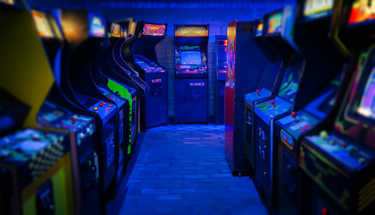

How to stay entertained in Taniti:
Most people visit Taniti to enjoy the beaches, explore the rainforest, and to visit the volcano.
However, there are other things to do, including:

- Visiting a local history museum
- Going on chartered fishing tours
- Snorkeling at the beaches
- Zip-lining in the rainforest
- Visiting several pubs including a microbrewery
- Dancing at our new dance club
- Watching movies at our movie theatre
- Taking helicopter rides
- Playing at our huge arcade
- Visiting our many art galleries
- Bowling at our bowling alley
Taniti is even developing a nine-hole golf course that should be operational by next year.
Many of these activities are located in Merriton Landing, which is a rapidly developing area on the north side of Yellow Leaf Bay.